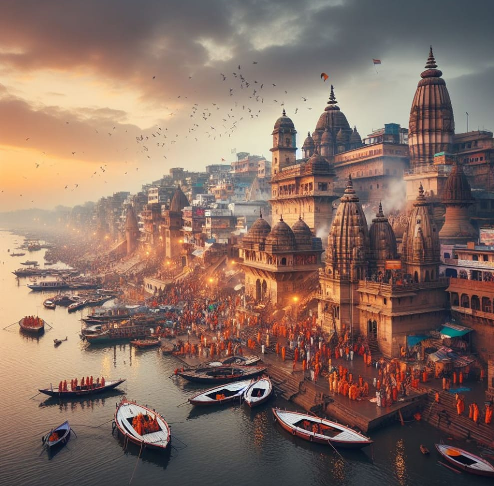

Kashi Vishwanath Temple is a Hindu temple dedicated to Shiva. It is located in Vishwanath Gali, in Varanasi, Uttar Pradesh, India. The temple is a Hindu pilgrimage site and is one of the twelve Jyotirlinga shrines. The presiding deity is known by the names Vishwanath and Vishweshwara (IAST: Viśvanātha and Viśveśvara), literally meaning Lord of the Universe.
According to several historical accounts, the Mughal Emperor Aurangzeb ordered the demolition of the Hindu temple in 1669.[1] Subsequently, in 1678, the Gyanvapi Mosque was built on its site,[2] but Hindu pilgrims continued to visit the remnants of the temple.[1] The current structure was constructed on an adjacent site by the Maratha ruler Ahilyabai Holkar of Indore in 1780.[3]
In 2021, a major redevelopment of the temple complex was completed, and the Kashi Vishwanath Dham Corridor connecting the Ganga river with the temple was inaugurated by Prime Minister Modi, leading to a many-fold increase in visitors.[4][5] It has become one of the most visited Hindu temples in India, with an average 45,000 pilgrims per day in 2023.[6] The total assets of the temple, were estimated to be more than ₹6 crores in 2024.[7]

The temple complex consists of a series of smaller shrines located in a small lane called the Vishwanatha Gali, near the river. The linga of the main deity at the shrine is 60 centimetres (24 in) tall and 90 centimetres (35 in) in circumference, housed in a silver altar.[48] The main temple is a quadrangle, and there are shrines to other gods all around it. There are small temples for Kala Bhairava, Kartikeya, Avimukteshwara, Vishnu, Ganesha, Shani, Shiva, and Parvati in the complex.
There is a small well in the temple called the Jnana Vapi, also spelled Gyan Vapi (the wisdom well). The Jnana Vapi is located to the north of the main temple, and during the invasion by the Mughals, the jyotirlinga was hidden in the well to protect it. It is said that the main priest of the temple jumped in the well with the lingam in order to protect the jyotirlinga from invaders.
There is a Sabha Griha (congregation hall) leading to the inner Garbha Griha (sanctum sanctorum). The jyotirlinga is enshrined in the sanctuary and placed on a silver platform. The structure of the temple is composed of three parts. The first consists of a 15.5-meter-high spire on the temple; the second is a gold dome; and the third is the gold spire within the sanctuary bearing a flag and a trident.
The Kashi Vishwanath Temple is popularly known as the Golden Temple, due to the gold plating of its spire. One tonne of gold donated by Maharaja Ranjit Singh has been used in the gold plating,[49] as well as in three domes, each made up of pure gold, donated in 1835.
The temple receives around 3,000 visitors every day. On certain occasions, the numbers reach 1,000,000 or more.
The Shri Kashi Vishwanath Dham corridor was constructed between Kashi Vishwanath Temple and Manikarnika Ghat along the Ganges River, providing various amenities for pilgrims.[50]
TO KNOW MORE GO TO PLACES